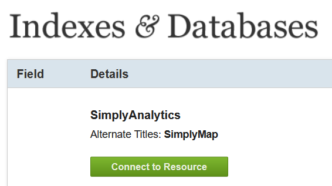

Data Types, Classification, & Visualization
Please note: The Lab Questions corresponds to this lab assignment. There are questions you need to answer in the quiz that pertain to the lab, so its a good idea to skim the quiz questions before starting the lab.
This page contains instructions for the lab assignment, follow them to work through the lab in ArcGIS Pro. There are links to documentation where applicable along with embedded screenshots and videos in the instructions at some steps for reference. Feel free to work with peers in your lab section and don’t hesitate to ask your TA for help!
Warning: The ArcGIS Pro software package is updated frequently. The exact name/position of tools may diverge slightly from what you see in the screenshots or videos. Don’t worry recreating what you see in the videos exactly - just use them as a guide to help you work through things.
Overview
This lab will help you understand different types of data, how we classify data, and techniques for visualizing data. We will use census data from statistics Canada to investigate rural/urban disparities in BC. There are distinct social, political, and economic differences between Urban and Rural communities in BC. Today we are going to investigate if there is a difference in the cost of food in Rural and Urban areas of different sizes. Specifically, portion of their income people spend on food. We are going to define Rural and Urban based on two criteria: total population and population density.
Workflow
- Download the BC boundary file and Canadian Census Data
- I am providing you will a boundary file for BC, you’ll see it linked on the next page.
- Use Simply Analytics to query and download Canadian Census data.
- Project setup and pre-processing
- Create a project
- Use a feature dataset to make sure your data is projected correctly
- Classify Data
- Use the Updated Stats Canada urban/rural classification scheme
- Visualize Data
- Create charts to display your results
Getting Started
Create a New Project
Open up AcrGIS Pro and create a new project. You can reference the same steps outlined in Module 1 for help creating a project.
Name the project BC_Food_Cost
Create a new “Feature Dataset” called BC_Census_Data
- Make sure the feature dataset is in the “NAD 1983 BC Environment Albers” projection
- See the video below for guidance
Download the BC Boundary File
- Click the link to download the BC_Boundary.zip file.
- Extract the contents of the BC_Boundary.zip file to your newly created BC_Food_Cost project folder.

- Import the BC_Boundary shapefile to your BC_Census_Data feature dataset.
- Start by adding the BC_Boundary.shp to the map
- Check the Spatial Reference System
- Check the Attribute Table
- Remove it from the Table of Contents
- Right click the BC_Census_Data feature dataset
- Select: Import > Feature Class(es)
- Choose BC_Boundary.shp then click Okay
- The newly import BC_Boundary Feature class should automatically be added to your table of contents
- Inspect the coordinate system to see if it changed
- You can then delete the original shapefile
Downloading Census Data
We are gong to download population estimates for 2021 using Simply Analytics. You can also find it by Googling “Simply Analytics UBC Library”. One of the first results will be the Library Indexes & Databases page.
On the library page, click “Connect to the Resource”. This will redirect you to the simply analytics logon page.
Click the link to create a new account. Note you have to connect via the library, otherwise you will be need to login via the UBC VPN first.

Once you’re setup, you can download the data. The video below walks you through using the simply analytics interface. We are going to download the following data:
- Total Population (2021)
- Median Household Income (2021)
- Average Total Expenditures on Food (2021).
The steps outlined in the video are:
- Create your project to query data.
- Select study area and inspect default variables.
- Explore the interface.
- Watch intro video on Simply Analytics.
- Query additional variables.
- Search for food cost.
- Make sure to select the correct variable.
- Export the data.
- Save the project so its easy to come back if needed.
- Export the shapefile.
- Make sure all variables are checked.
- Make sure to export Census Subdivisions.
- Check your email for the download link. Clicking it will downloaded a .zip folder with a name that starts with “SimplyAnalytics_Shapefiles_” followed by a bunch of gibberish
- Extract the contents of SimplyAnalytics_Shapefiles .zip file to your newly created BC_Food_Cost project folder as well.
Importing the Census Data
We have to do a few things to the data to make sure everything setup and ready so we can conduct our analysis.
- Import the SimplyAnalytics_Shapefiles using the same steps as above and name it BC_Census_Data
Make sure to check the Spatial Reference System before and after the import. Think about:
- What coordinate system the census data came in from Simply Analytics?
- What coordinate system we’re using and why.
You can delete the original SimplyAnalytics_Shapefiles, but Do Not delete variable_names.txt, we still need it!
- Rename the SimplyAnalytics_Shapefiles as BC_Census_Data
- Right click the SimplyAnalytics_Shapefiles and select > Rename
Rename the Variables
- Rename the Attributes in the BC_Census_Data feature class.
- Data from simply analytics comes with generic column headers that can be confusing.
- The simply analytics data comes with a text file containing header names you can reference to give them more helpful names.
Clip the BC_Census_Data Layer
- Use the Clip Tool to get the BC_Census_Data layer to show the true boundaries of the census subdivisions by using the BC boundary file to remove areas of ocean.
- The census subdivision from Simply Analytics look pretty funky along the coast and we can use the Clip tool to cut the layer down to size.
- Use the BC_Census_Data is the Input Layer
- Use the BC_Boundary as the Clip Layer
- Name the output BC_Subdivisions_2021_Clip
Data Classification
Defining Rural & Urban Areas
Until 2010, Statistics Canada used a Rural/Urban classification scheme to describe Census unit smaller than a Province/Territory:
Rural: a population density less than 400 people per square kilometer or a total population of less than 1,000 people.
Urban: a unit with a population density at least 400 people per square kilometer and a total population of at least 1,000 people.
The Revised Classification
Statistics Canada Now uses the Population Center and Rural Area Classification. You can skim the Documentation explaining the classification scheme to get a feel for the reasoning behind updating from the old Rural/Urban method? The new classification scheme was updated to split the old Urban class into three different kinds of Population Centers:
| Rural | Small Population Centers | Medium Population Center | Large Urban Population Center |
|---|---|---|---|
| Same as old method | Not Rural and Population < 30,000 |
Not Rural and Population >= 30,000 and Population < 100,000 |
Not Rural and Population >= 100,000 |
Applying the Classification
Your task is to apply the Population Center and Rural Area Classification scheme (see table above). You can watch the video below for reference, which shows you how to apply the old Urban/Rural scheme.
You are going to use the Select by Attribute function to help apply the classification.
- Select by Attribute allows us to select rows/objects with a certain attribute.
- It relies on something called a Structured Query Language (SQL).
We are selecting all rows “Where” our conditions are met.
- You can use the And/Or commands to combine queries.
- And: Selects where All statements are true
- Or: Selects where Any statements are true
Note: The video is from a slightly dated version of the lab, the steps are the same but some of the file names may look a bit different, and it was recorded using an older version of ArcGIS Pro.
You do not need to apply the old classification scheme, I use this example as a reference. All your answers and uploads for the lab should be drawn from the New classification scheme. The general steps for classifying the data are:
- Calculate population density.
- You can refer to the exercise we did as part of Module 2 for help.
- Create a field and populate it using select by attribute, following the Population Center and Rural Area Classification scheme.
- You can reference the table above for pointers on how to formulate your SQL statements.
Data Visualization
Plotting Relationships
Now that we’ve classified the data, lets look for some patterns. The video instructions below use the old Rural/Urban classification as an example to show you how to create two kinds of plots that are useful for learning more about our data. You will create two plots in this step, and fine tune the styling in the next step, then upload them to canvas.
Bar charts can be used to aggregate counts/sums by groups. You will create a bar chart showing the total population per Population Centre and Rural Area class.
Box plots can be used to show the dispersion of data within groups. You will create a box plot showing the distribution of “Income spent on Food” per Population Centre and Rural Area class.
- To do this, you must first calculate a new column, normalizing food expenditures by income.
Benefits of Data Classification
Create scatter plot with Population Density on the X-Axis and Income_on_Food on the Y axis. You don’t need to submit this chart, but look at the relationship you see here and think about how it compares to what you see in the box plot.
Styling Your Visualizations
Oftentimes, the default parameters that ArcPro assigns for colors, etc. are not the best choices. Also, we often need to edit text headers and labels for a cleaner presentation. Watch the video bellow for tips on how to stylize your charts before submitting them. You can use Color Brewer to make sure you use a color scheme that is accessible.
- You will be submitting the stylized bar chart and box plot to canvas. So make sure they look good and you choose colors that are appropriate for the data type.